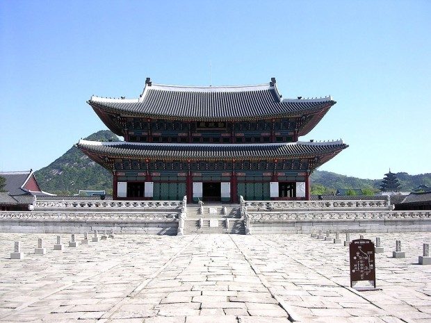
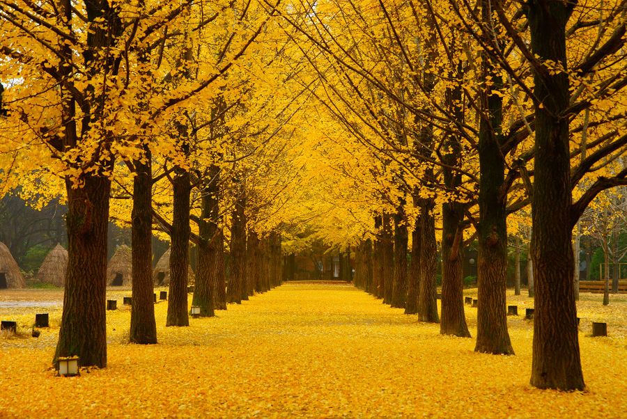
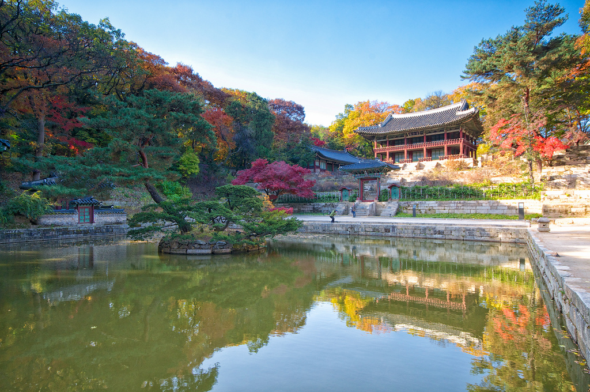
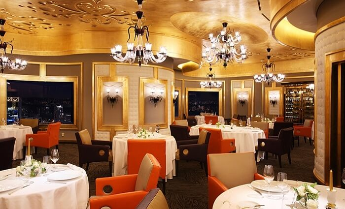
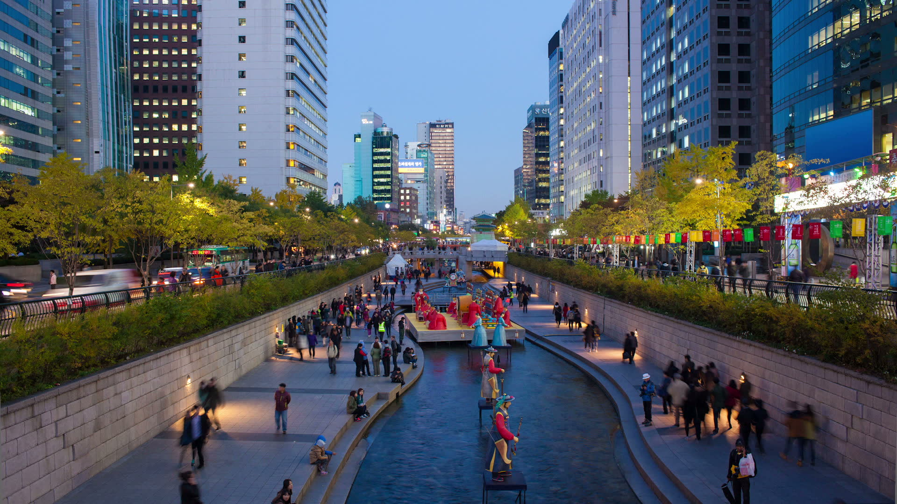
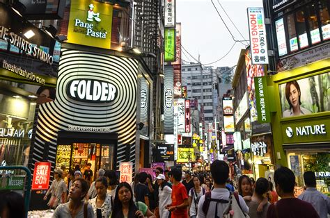
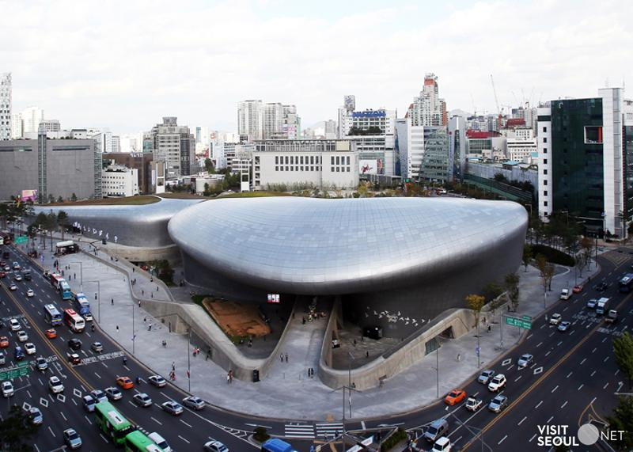
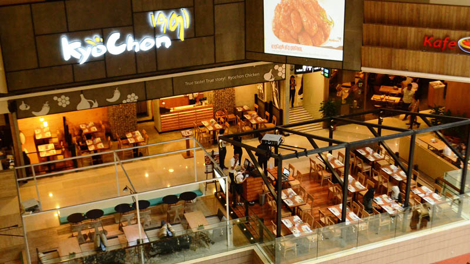
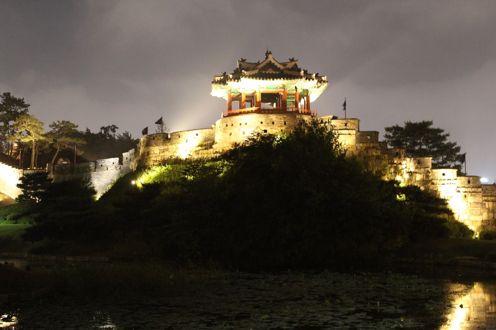

| Incheon Airport | Gyeongbokgung Palace | Bukchon Hanok Village |
|---|---|---|
 |
 |  |
| The airport has a golf course, spa, private sleeping rooms, an ice skating rink, a casino, indoor gardens, and a Museum of Korean Culture.We can reach there at 5:30am,then can go Holiday Inn Express Euljiro.Plan to stay:2hours. | Today, the Gyeongbokgung Palace is open to the public and houses the National Folk Museum of Korea, the National Palace Museum of Korea, and traditional Korean gardens.Plan to stay:1hour | Now it is used as a traditional culture center and hanok restaurant, allowing visitors to experience the atmosphere of the Joseon Dynasty.We can go there at 3pm.Plan to stay: 5hours |
| Nami Island | Petite France | The Garden of Morning Calm |
|---|---|---|
|  |  |
 |
| Is the nice place to visit and it is famous mostly due to the Korean drama - Winter Sonata. We not manage to watch the red maple leaves but it still the nice scene. Plan to stay: 3hours | It is a small french cultural village set in a Korean countryside that has museums, restaurants, cafes, workshops and a guesthouse.We can go there at 2pm.Plan to stay:1hour | You can explore the garden in about two hours. In the heart of it, there is also a traditional tea room, and you can find a number of street vendors lined up at the entrance selling Korean snacks such as tteokbokki(spicy rice cakes) and sweet red bean pastries. |
| Changdeokgung Palace | N Seoul Tower | Pierre Gagnaire |
|---|---|---|
|  |  |
 |
| A wonderful palace area with parks and a lot of interesting buildings. You will also see several Korean people in traditional dresses, which is very interesting and beautiful.Plan to stay:1-2hours | N Seoul Tower is South Korea's first general radio wave tower, providing TV and radio broadcasting in Seoul.[3] Currently, the tower broadcasts signals for Korean media outlets, such as KBS, MBC and SBS.Plan to stay:3hours | A warm welcome, a beautiful refined multi-room venue and great service are the start. Then the adventure begins.We can have dinner there.Plan to stay:4hours |
| Cheonggyecheon Stream | Myeongdong | Lotte Mart |
|---|---|---|
|  |  |  |
| Creating an environment with clean water and natural habitats was the most significant achievement of the project. Species of fish, birds, and insects have increased significantly as a result of the stream excavation.Plan to stay:2hours | Parades, music and dance performances, fashion shows and other spectacles are part of the festivities. Many shops and stores offer product sales and discounts.Plan to stay:5hours | At Lotte Mart, you can buy high-quality goods - groceries, processed food, household goods, clothes and fashion accessories, electronics, toys, cosmetics, and more - at the lowest prices with remarkable service.Plan to stay:3hours |
| Dongdaemun | Kyochon | Suwon |
|---|---|---|
|  |  |  |
| The market sells all types of goods but notably silks and fabric, clothes, shoes and leather goods, sporting goods, plumbing and electronics, office supplies, fortune tellers, toys and food areas specialising in Korean cuisine.Plan to stay:3hours | The chicken here is very good. I haven't had the pleasure of Bonchon chicken but I've heard this place was almost as good if not the same.It opens fron 11am to 10:45pm,so we can go there at 2pm.Plan to stay:1hour | Suwon is home to football club Suwon Samsung Bluewings, which have won the K-league on four occasions[4] and AFC Champions League twice. The KT Wiz of the Korea Baseball Organization also plays in Suwon.Plan to stay:1hour |
| Price List | |
|---|---|
| Numbers of people | Usual Price |
| Single | $4000 |
| Dual | $7000 |
| Triple | $9000 |
| Four and above | $3500 for each |